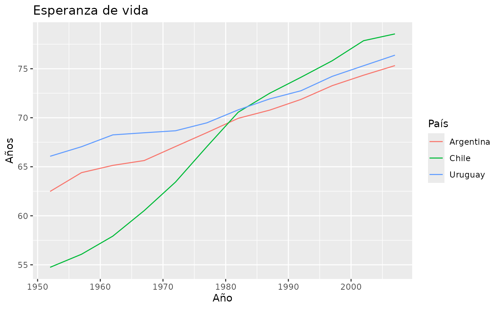

Introducción
paisesR ayuda a explorar la esperanza de vida y el PBI per cápita de los países de Sudamérica.
El conjunto de datos
head(paises_sudamerica)
#> pais anio esperanza_de_vida pib_per_capita
#> 1 Argentina 1952 62.485 5911.315
#> 2 Argentina 1957 64.399 6856.856
#> 3 Argentina 1962 65.142 7133.166
#> 4 Argentina 1967 65.634 8052.953
#> 5 Argentina 1972 67.065 9443.039
#> 6 Argentina 1977 68.481 10079.027Resumen de un país
resumen_pais(paises_sudamerica, "Argentina")
#> # A tibble: 1 × 3
#> pais esperanza_media pib_medio
#> <fct> <dbl> <dbl>
#> 1 Argentina 69.1 8956.Gráfico de esperanza de vida
grafico_esperanza(paises_sudamerica, c("Argentina", "Chile", "Uruguay"))
Ranking de países
ranking_paises(paises_sudamerica, variable = "esperanza", n = 5)
#> # A tibble: 5 × 2
#> pais promedio
#> <fct> <dbl>
#> 1 Uruguay 70.8
#> 2 Argentina 69.1
#> 3 Chile 67.4
#> 4 Paraguay 66.8
#> 5 Venezuela 66.6